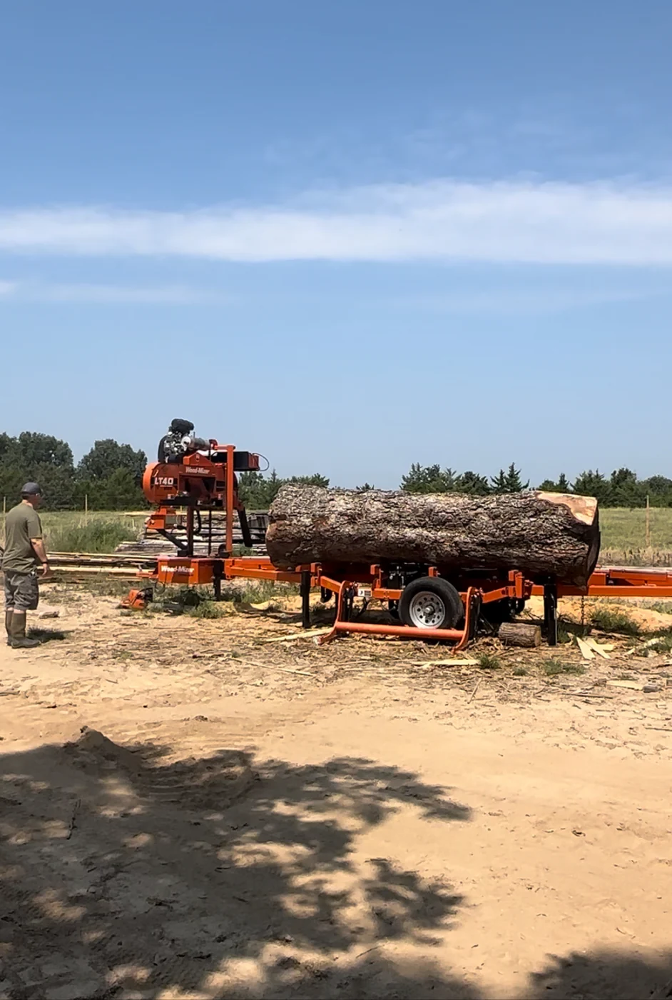
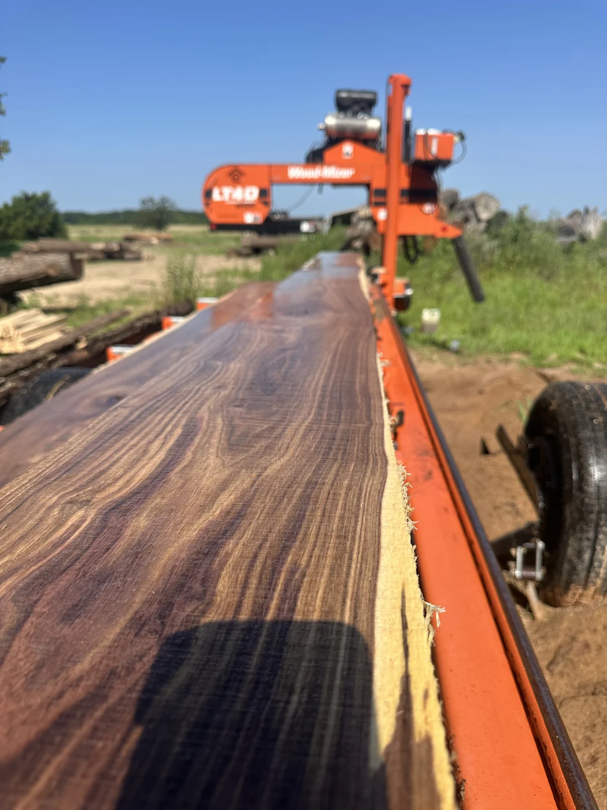
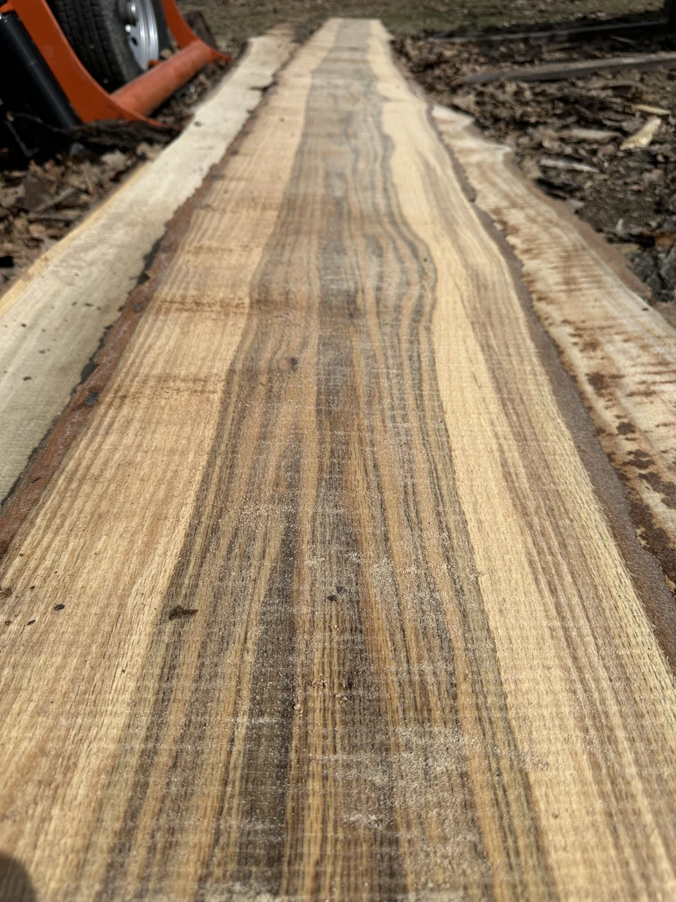
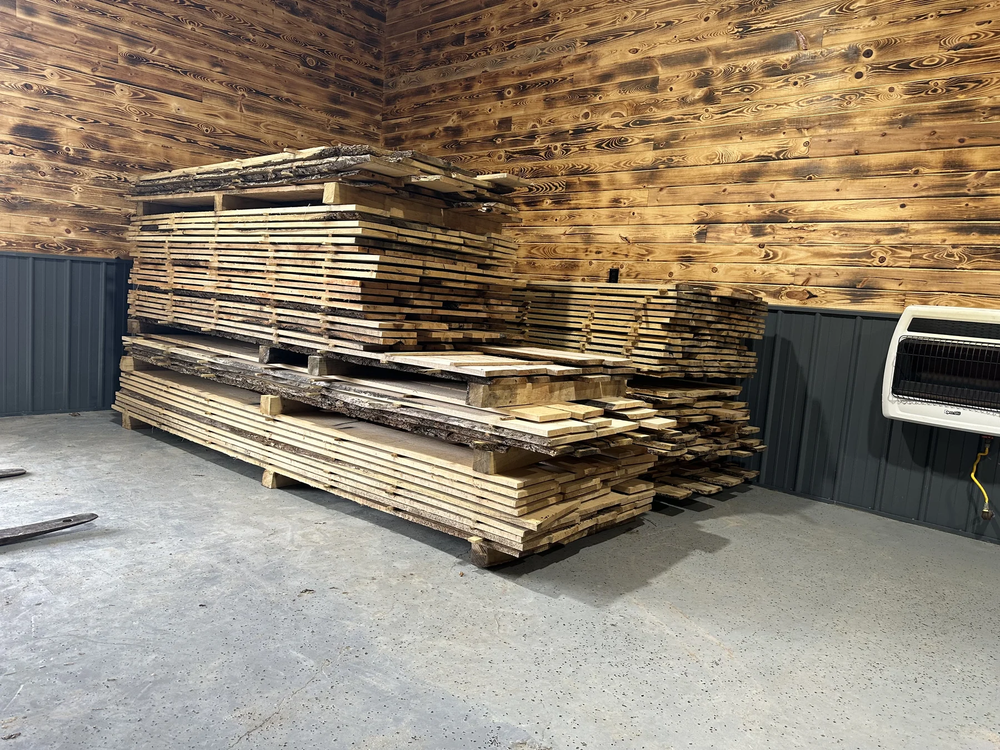
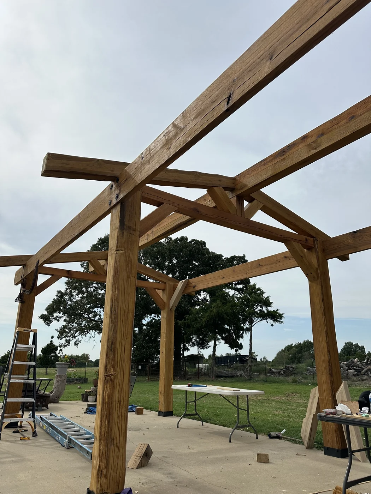
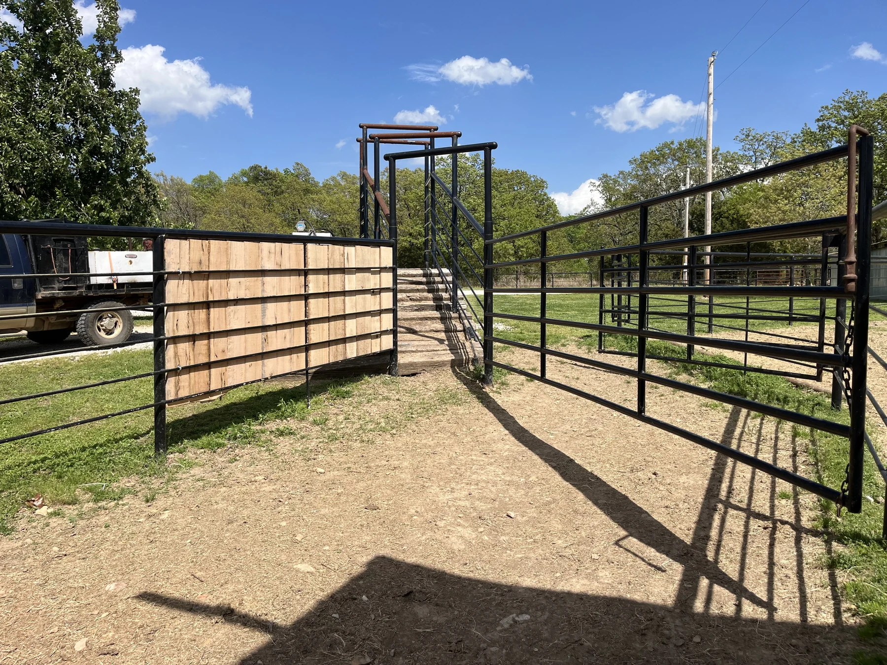

Custom Saw Milling • Grand Lake, Oklahoma
Custom
Milling
Turning customer logs into useful lumber, custom timbers, slabs, and material ready for the next project.
The Work
There may be more value in that log than you think.
Rafter E custom mills customer-supplied logs into specified dimensions, giving property owners and builders the opportunity to turn their own timber into material they can actually use.
We also mill custom timbers and slabs and use our own projects to demonstrate what can be created from logs that might otherwise be chopped into firewood or burned.
From Log to Useful Material
Making the most of what the tree has to offer.
Customer Logs → Custom Dimensions
We mill customer-supplied logs to the dimensions they need, turning raw logs into usable lumber for their specific project.


Custom Timbers & Slabs
From substantial timbers to distinctive slabs, custom milling lets us uncover useful material, character, and grain already inside the log.


Putting the Material to Work
Rafter E also uses milled material in our own projects to demonstrate what those logs can become instead of being chopped into firewood, burned, or otherwise wasted.


What We're Proud Of
Turning rough logs into something useful.
Custom milling gives good logs another purpose. Instead of seeing only firewood or waste, we can uncover timbers, slabs, boards, and material that can become part of a lasting project.
“What I’m most proud of is the ability to take a rough log and turn it into timbers and useful material that can be put to work instead of going to waste.”
Have Logs Worth Saving?